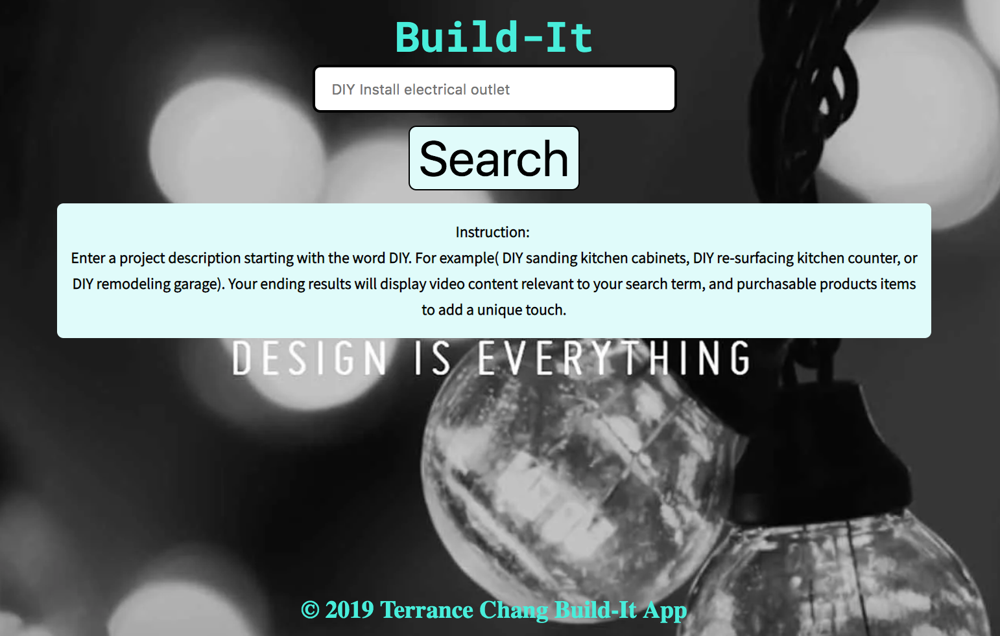
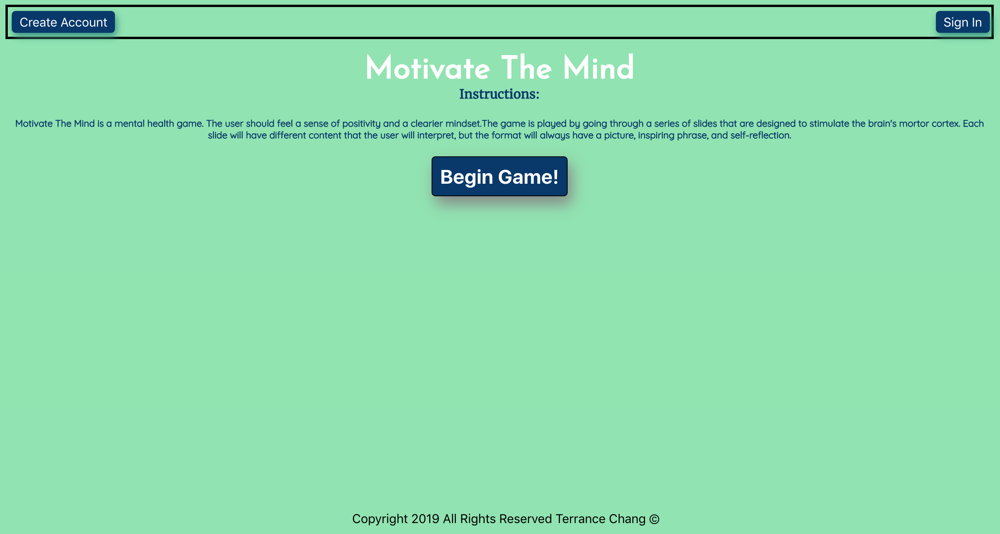
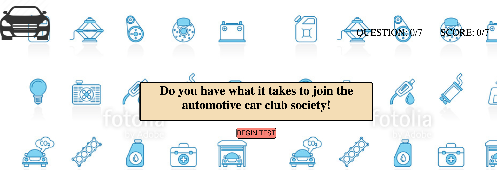

Hello, I’m Terrance Chang.
I'm a Full Stack Web Developer whose designs and implements backend and frontend website specialized to your business.
As a web developer and recent graduate of the Engineering Flex program at Thinkful. I embrace complex coding challenges and like to problem solve. I find web development and great opportunity for me to to be creative, and seeing my creations come to fruition on a webpage. My meticulous coding approach is to always optimize my code functions, utilizing different libraries/techniques, and make secure website to deter hackers.
Away from my computer, I really enjoyed an active lifestyle whether it be working out at the gym, walking my cat, or fixing cars. For me it’s important to find the happy medium of detoxing from technology by taking up alternative hobbies. I’m a strong believer in DIY (Do It Yourself) and a student of self-improvement by speaking with experts of multiple subject matters.
Projects
Build-It
Build-It is a search engine that helps users find information on how to complete their own DIY projects. Users can utilize the search engine to find how to video on building videos, and get inspired with product item to help with decorating a project. The programming languages used to build the application are HTML, CSS, JavaScript, and jQuery library. Finally in order to pull the data for the search engine, the YouTube and Etsy API were needed to return the results back to the users.
Mind of Mediation
Motivate The Mind is a mental health game. The user should feel a sense of positivity and a clearier mindset.The game is played by going through a series of slides that are designed to stimulate the brain's mortor cortex. Each slide will have different content that the user will interpret, but the format will always have a picture, inspiring phrase, and self-reflection.
Quiz App
Automotive Quiz is a testing application that enables service center to test a mechanics knowledge. The program allows the user to go through a series of questions, and tells the user if their answer was right or wrong. Finally, the program brings the user to a result page where after finishing all the questions they get their results on whether they passed the test. Utilization of this program can now let service center companies conduct a more thorough examination of a candidate before investing. Using HTML5 and CSS to lay the foundation of the program we have transition from idea, to proof of concept. Furthermore, this program functionality really comes to life by implementing Javascript and JQuery Library making for a interactive and responsive program.